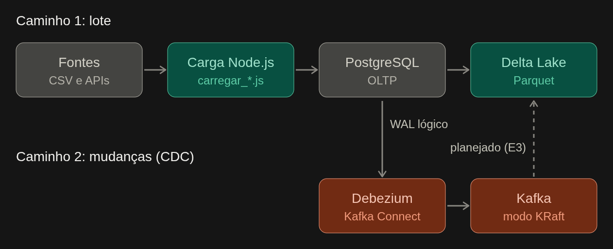

Arquitetura e modelo de dados
Visão técnica da plataforma FarmaData: como o dado sai das fontes públicas,
passa pelo PostgreSQL (OLTP) e chega à camada analítica em formato aberto.
Decisões e alternativas estão nos ADRs (docs/adr/); aqui está o como é.
1. Visão geral

| Camada | Tecnologia | Papel |
|---|---|---|
| Fontes | SNGPC/Anvisa, DATASUS (CID-10), IBGE/SIDRA, INMET | Dados abertos, publicados em arquivos ou APIs |
| OLTP | PostgreSQL 16 | Fonte transacional normalizada, insert-only (ADR-001) |
| Ingestão em lote | Node.js 20 (scripts/carregar_*.js) |
Download, validação e carga idempotente |
| Captura de mudanças | Debezium 2.7 + Kafka 3.8 (KRaft) | Eventos c/u/d do WAL da tabela de fatos |
| Analítico | Delta Lake sobre Parquet (deltalake, pyarrow) |
Tabela achatada, particionada, em formato aberto |
| Consulta analítica | DuckDB (delta_scan) |
Leitura por motor diferente do escritor |
2. Serviços (Docker Compose)
| Serviço | Imagem | Arquivo | Função |
|---|---|---|---|
db |
postgres:16-alpine |
docker-compose.yml |
OLTP; porta do host 5433 |
carga |
node:20-slim |
docker-compose.yml |
Roda os scripts de carga em lote |
kafka |
apache/kafka:3.8.0 |
docker-compose.cdc.yml |
Broker single-node, modo KRaft |
connect |
quay.io/debezium/connect:2.7 |
docker-compose.cdc.yml |
Kafka Connect com o conector Postgres |
lakehouse |
Python | docker-compose.yml |
Exporta, compacta e valida o Delta |
O CDC é um override: o ambiente normal fica leve e a stack pesada só sobe quando necessário
(docker compose -f docker-compose.yml -f docker-compose.cdc.yml up -d db kafka connect).
3. Caminho 1 — ingestão em lote
- Download com cache em
tmp/e leitura em stream do CSV. - Resolução de dimensões (
municipio,medicamento) com inserção sem duplicar. - Carga de um arquivo mensal numa única transação:
DELETEdas linhas doarquivo_origem→COPY→ upsert emcarga_arquivo. Falha =ROLLBACK. - Controle:
carga_arquivoregistra o que foi carregado; arquivo já presente dá[SKIP]. Um advisory lock impede duas cargas simultâneas. - Índices: removidos e recriados apenas quando há 3 ou mais arquivos pendentes; o índice
idx_venda_arquivo_origemtorna oDELETEbarato. - Linhas rejeitadas são contadas por motivo (ex.:
sem_principio_ativo,quantidade_invalida).
Reexecução, flags e evidência: seção de ingestão do README.md e docs/evidencias/idempotencia.txt.
4. Caminho 2 — captura de mudanças (CDC)
| Parâmetro | Valor | Motivo |
|---|---|---|
| Tabela capturada | public.venda_medicamento |
Tabela de fatos |
| Plugin / slot / publicação | pgoutput / farmadata_slot / farmadata_pub |
Decodificação lógica nativa |
REPLICA IDENTITY |
FULL |
before traz a linha inteira em UPDATE/DELETE |
snapshot.mode |
no_data |
O estado inicial já veio pelo lote |
decimal.handling.mode |
string |
NUMERIC seria base64 por padrão |
| Tópico | farmadata.public.venda_medicamento |
Prefixo farmadata + schema + tabela |
Evento: op (c, u, d), before, after, source.lsn, ts_ms.
Destino atual: o tópico Kafka. O consumidor que aplica os eventos no Delta está planejado para a E3.
Atenção: o slot retém WAL enquanto o conector está parado; recargas mensais com o conector ativo geram milhões de eventos.
5. Camada analítica
Caminho: data/lakehouse/delta/venda_medicamento/ (_delta_log/ + Parquet).
| Aspecto | Escolha |
|---|---|
| Modelo | Achatado: fato + atributos de dimensão (sem joins na leitura) |
| Partição | ano, mes |
| Ordenação interna | sigla_uf, id_medicamento |
| Codec / row group | ZSTD nível 3 / 500 mil linhas |
| Tamanho-alvo de arquivo | 128 MB (compactar_delta.py) |
| Idempotência | overwrite restrito à partição (predicate = ano/mes) |
Colunas do Delta: id_venda, data_venda, ano, mes, trimestre, id_municipio, nome_municipio,
sigla_uf, regiao, id_medicamento, principio_ativo, tipo_receituario, quantidade_vendida,
unidade_medida, codigo_cid10, sexo_paciente, idade_paciente, unidade_idade,
eh_antimicrobiano, arquivo_origem.
Detalhes e justificativas: docs/CAMADA_ANALITICA.md.
6. Modelo de dados (PostgreSQL)
6.1 Relacionamentos
unidade_federativa ──► municipio ───────────────┐
periodo ────────────────────────────────────────┤
medicamento ────────────────────────────────────┤
conselho_profissional ──────────────────────────┤──► venda_medicamento
tipo_receituario / unidade_medida / unidade_idade ┤
cid10 ──────────────────────────────────────────┘
municipio ──► ibge_populacao_municipio (id_municipio, ano)
municipio ──► ibge_populacao_faixa_etaria_municipio (id_municipio, ano, faixa_etaria)
unidade_federativa + periodo ──► clima_mensal_uf (sigla_uf, id_periodo)
carga_arquivo (controle de carga, sem FK)
6.2 Dicionário de dados
Gerado de information_schema e pg_constraint em 20/10/2026.
Dimensões
unidade_federativa — 27 UFs (valores fixos, 01_geografia_uf.sql). PK sigla; UNIQUE codigo_ibge.
| Coluna | Tipo | Nulo | Descrição |
|---|---|---|---|
sigla |
char | não | Sigla da UF |
codigo_ibge |
integer | não | Código IBGE da UF |
nome |
varchar | não | Nome da UF |
regiao |
varchar | não | Região do país |
municipio — extraído dos CSVs do SNGPC. PK id_municipio; UNIQUE (nome_municipio, sigla_uf); FK sigla_uf → unidade_federativa (ON UPDATE CASCADE).
| Coluna | Tipo | Nulo | Descrição |
|---|---|---|---|
id_municipio |
integer | não | Chave |
nome_municipio |
varchar | não | Nome como vem da Anvisa |
sigla_uf |
char | não | UF |
codigo_ibge |
integer | sim | Preenchido pelo carregador do IBGE; nulo quando a grafia diverge |
periodo — 12 meses do recorte (03_tempo_periodo.sql). PK id_periodo (AAAAMM); UNIQUE (ano, mes).
| Coluna | Tipo | Nulo | Descrição |
|---|---|---|---|
id_periodo |
integer | não | Chave no formato AAAAMM |
ano, mes |
integer | não | Ano e mês |
nome_mes |
varchar | não | Nome do mês |
trimestre, semestre |
integer | não | Agrupamentos de tempo |
data_inicio, data_fim |
date | não | Limites do mês |
medicamento — extraído do SNGPC. PK id_medicamento; UNIQUE (principio_ativo, descricao_apresentacao).
| Coluna | Tipo | Nulo | Descrição |
|---|---|---|---|
id_medicamento |
bigint | não | Chave |
principio_ativo |
text | não | Princípio ativo |
descricao_apresentacao |
text | não | Apresentação |
cid10 — catálogo DATASUS. PK codigo.
| Coluna | Tipo | Nulo | Descrição |
|---|---|---|---|
codigo |
varchar | não | Código CID-10 |
descricao |
text | não | Descrição completa |
descricao_abreviada |
varchar | sim | Descrição curta |
categoria |
varchar | sim | Categoria (indexada) |
restricao_sexo, causa_obito |
char | sim | Campos do catálogo DATASUS |
Listas fixas da Anvisa (06_prescritor_listas.sql):
| Tabela | Colunas | Chave |
|---|---|---|
conselho_profissional |
id_conselho smallint, sigla, descricao |
PK id_conselho; UNIQUE sigla |
tipo_receituario |
id_tipo_receituario smallint, codigo, descricao |
PK id_tipo_receituario; UNIQUE codigo |
unidade_medida |
id_unidade_medida smallint, descricao |
PK id_unidade_medida; UNIQUE descricao |
unidade_idade |
id_unidade_idade smallint, descricao |
PK id_unidade_idade; UNIQUE descricao |
Fato
venda_medicamento — uma linha por registro do CSV agregado do SNGPC. PK id_venda; FKs para período, município, medicamento, conselho, tipo de receituário, unidades e CID-10.
| Coluna | Tipo | Nulo | Descrição |
|---|---|---|---|
id_venda |
bigint | não | Chave sequencial. Não é estável entre recargas: DELETE + COPY gera ids novos |
id_periodo |
integer | não | FK periodo |
data_venda |
date | não | Data (o carregador grava o dia 1 do mês) |
id_municipio |
integer | não | FK municipio |
id_medicamento |
bigint | não | FK medicamento |
id_conselho |
smallint | sim | FK conselho_profissional |
id_tipo_receituario |
smallint | sim | FK tipo_receituario |
quantidade_vendida |
numeric | não | Quantidade; unidades heterogêneas |
id_unidade_medida |
smallint | sim | FK unidade_medida |
codigo_cid10 |
varchar | sim | FK cid10 |
sexo_paciente |
char | sim | Sexo do paciente |
idade_paciente |
smallint | sim | Idade normalizada em anos |
id_unidade_idade |
smallint | sim | FK unidade_idade |
eh_antimicrobiano |
boolean | não | Heurística do carregador |
numero_notificacao |
varchar | sim | Não vem do CSV agregado; só a demo do CDC o preenche |
arquivo_origem |
varchar | sim | Arquivo mensal de origem; chave de idempotência do lote |
Bases complementares e controle
| Tabela | Colunas | Chave / FK | Origem |
|---|---|---|---|
ibge_populacao_municipio |
id_municipio, ano, populacao |
PK (id_municipio, ano); FK municipio |
IBGE/SIDRA, agregado 6579 |
ibge_populacao_faixa_etaria_municipio |
id_municipio, ano, faixa_etaria text, populacao |
PK (id_municipio, ano, faixa_etaria); FK municipio |
IBGE/SIDRA, agregado 9514 (Censo 2022) |
clima_mensal_uf |
sigla_uf, id_periodo, temp_media_c, precipitacao_media_mm (ambas anuláveis), qtd_estacoes smallint |
PK (sigla_uf, id_periodo); FKs unidade_federativa, periodo |
INMET, dados históricos por estação |
carga_arquivo |
arquivo text, linhas_lidas, linhas_inseridas, linhas_rejeitadas bigint, motivos_rejeicao jsonb, carregado_em timestamptz |
PK arquivo |
Criada pelo carregar_sngpc.js |
6.3 Índices da tabela de fatos
| Índice | Colunas | Observação |
|---|---|---|
venda_medicamento_pkey |
id_venda |
PK |
idx_venda_arquivo_origem |
arquivo_origem |
Torna o DELETE da recarga barato; nunca é removido |
idx_venda_periodo_municipio |
id_periodo, id_municipio |
Consultas por tempo e local |
idx_venda_municipio_periodo |
id_municipio, id_periodo |
Consultas por local e tempo |
idx_venda_medicamento_periodo |
id_medicamento, id_periodo |
Consultas por medicamento |
idx_venda_antimicrobiano |
id_periodo, id_municipio onde eh_antimicrobiano |
Índice parcial |
Os quatro índices de consulta são os que o carregador remove e recria numa carga com 3 ou mais arquivos pendentes.
Não há UNIQUE na tabela de fatos: a idempotência é por arquivo, não por linha.
6.4 Preenchimento real ( ~6mi linhas)
| Coluna | Preenchidas | Leitura |
|---|---|---|
idade_paciente |
4.593.047 (74,8%) | Usável para faixas etárias |
codigo_cid10 |
28.857 (0,5%) | Muito esparsa: análises por CID-10 cobrem uma fração pequena |
id_tipo_receituario |
0 | Não preenchida pelo carregador |
id_unidade_medida |
0 | Não preenchida; somas misturam unidades |
id_unidade_idade |
0 | Não preenchida; a idade já está em anos |
6.5 Volume
68.264.756 linhas em 12 arquivos mensais; 5.088 municípios e 1.231 princípios ativos distintos.
7. Limitações conhecidas
- A idempotência do lote tem granularidade de arquivo mensal, não de linha. O
DELETEde ~6 milhões de linhas gera bloat. - A carga incremental detecta meses novos; um arquivo republicado com o mesmo nome só é recarregado com
FORCE=1. - Municípios com grafia divergente entre Anvisa e IBGE ficam sem
codigo_ibge. id_tipo_receituario,id_unidade_medidaeid_unidade_idadeficam nulos; consultas que dependem deles (por receituário, por unidade) não são possíveis com esta carga, e as somas dequantidade_vendidamisturam unidades.- As tabelas do IBGE têm série por
ano: consultas que as juntam à tabela de fatos devem filtrar o ano, ou a soma se multiplica. - Os eventos do CDC terminam no Kafka; a aplicação no Delta fica para a E3.
- Domínio insert-only: o CDC é demonstrado com
UPDATE/DELETEsintéticos (scripts/cdc/demo_cdc.js).